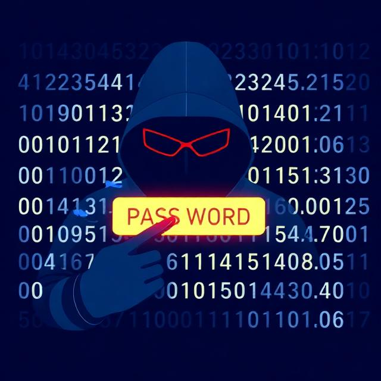
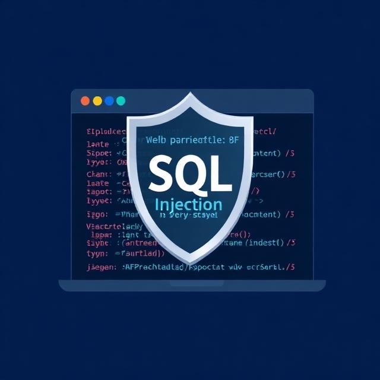

Lehké úlohy
Co je to kyberbezpečnost?
Základní principy ochrany dat, zařízení a sítí.
Typy kybernetických hrozebRansomware, trojský kůň, phishing, spyware, adware.
Útoky na síť a službyDoS, DDoS, man-in-the-middle.
Bezpečné chování na internetuPodezřelé odkazy, přílohy, veřejná WiFi.
Základní ochrana zařízeníAktualizace, antivir, firewall.
Středně těžké úlohy
CIA triáda
Confidentiality, integrity, availability.
Autentizace a autorizaceHesla, biometrie, vícefaktorové ověření.

Útoky na heslaBrute force, dictionary attack.
Zabezpečení počítačové sítěFirewall, otevřené porty, segmentace.
Sociální inženýrstvíPhishing a manipulace uživatele.
Těžké úlohy
Šifrování a ochrana dat
Symetrické a asymetrické šifrování, hash.

Bezpečnost webových aplikacíSQL injection a validace vstupů.
Detekce kybernetických útokůIDS, IPS, monitoring sítě.
Kyberbezpečnost v České republiceNÚKIB, CERT, CSIRT.
Legislativa a regulace (NIS2)Zákon o kybernetické bezpečnosti.
Aktiva, pasiva a řízení rizikCo je aktivum (data, servery), zranitelnosti, hrozby.
Disaster Recovery Plan (DRP)Plán obnovy po kybernetickém incidentu.